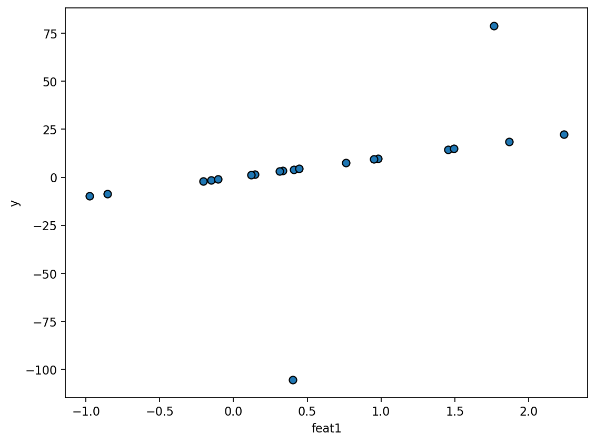
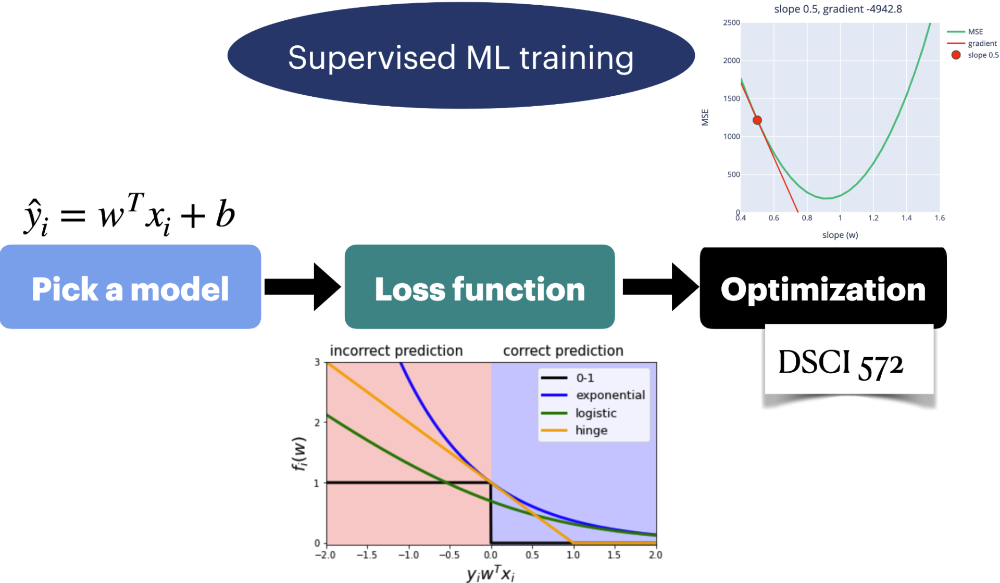
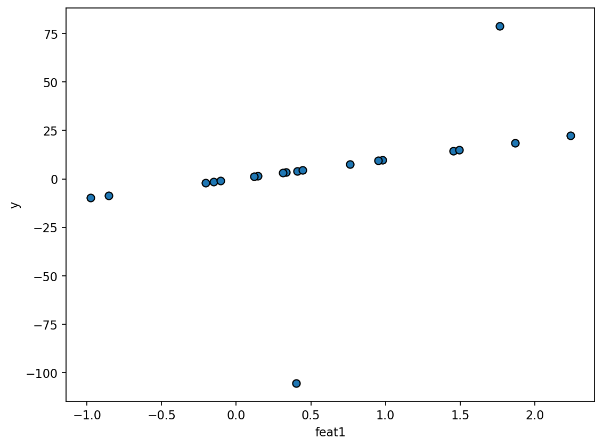
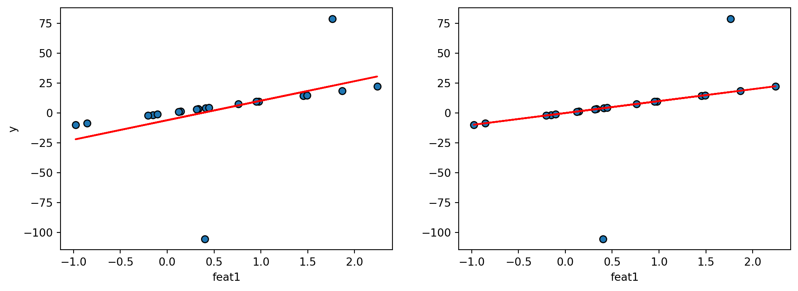
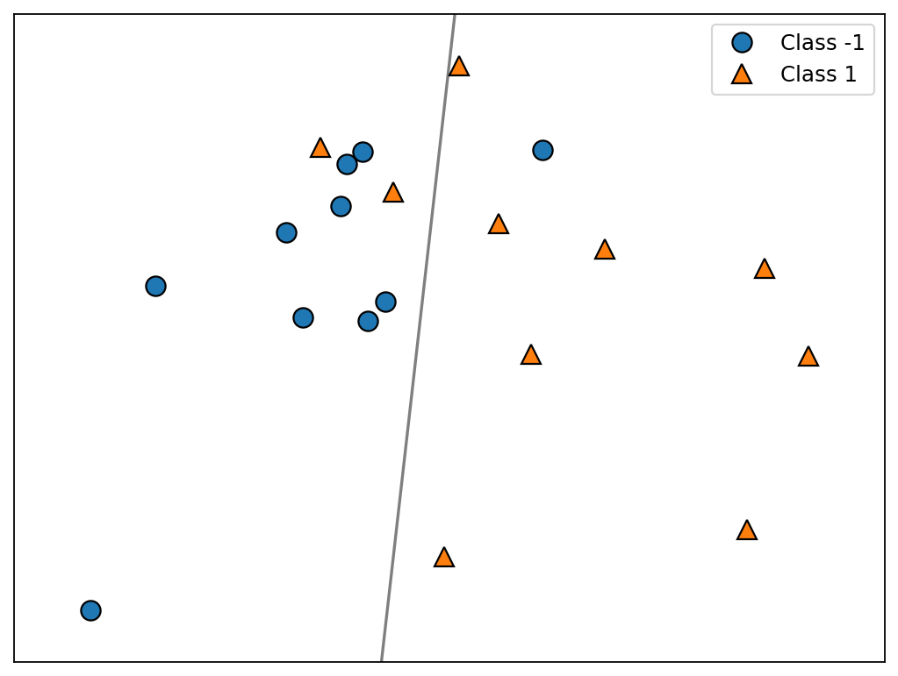
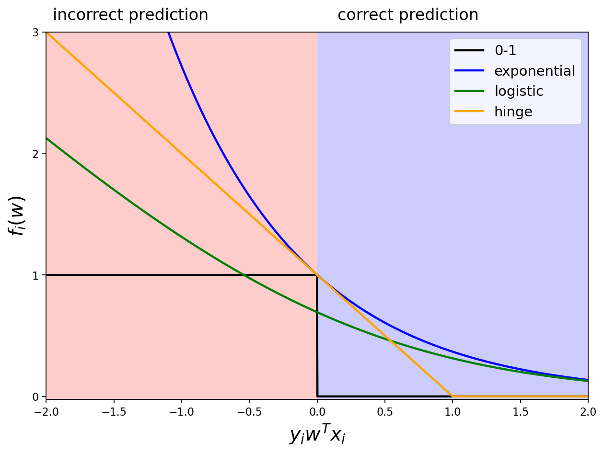
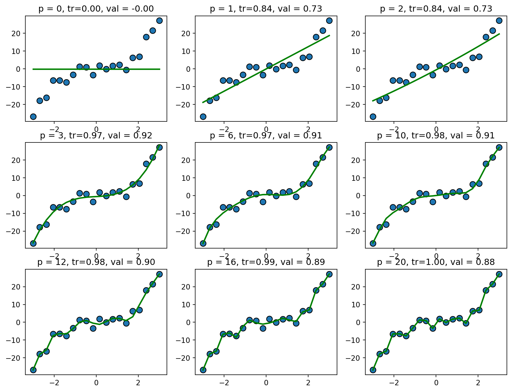

The loss function is \[J(w) = \sum_{i=1}^n (y_i - w^Tx_i)^2\]
Find \(w\) that minimizes the loss function.
A. Left = OLS, Right = absolute
B. Left = absolute, Right = OLS


| y_i | w^Tx_i | correct? (yes/no) | confident/hesitant? | loss |
|---|---|---|---|---|
|
Loading ITables v2.2.3 from the internet...
(need help?) |
\[J(w) = \sum_{i=1}^n I(y_i w^Tx_i < 0)\]
\[J(w) = \sum_{i=1}^n \exp(-y_iw^Tx_i)\]
\[J(w) = \sum_{i=1}^n \max(0, 1 - y_iw^Tx_i)\]
\[J(w) = \sum_{i=1}^n \log\left(1+\exp({-y_iw^Tx_i})\right)\]

\[f(w) = \sum_{i=1}^n \sum_{c=1}^C -y_{i,c} \log(\hat{p}_{i,c}).\]

We want to measure the size of a vector!
\[w_1 = \begin{bmatrix} 10 \\ 0 \end{bmatrix}, w_2 = \begin{bmatrix} 9 \\ 0.03 \end{bmatrix}, w_3 = \begin{bmatrix} 6 \\ 5 \end{bmatrix}\]
\[J(w) = \lVert{Xw -y}\rVert^2_2 + \lambda \lVert w\rVert_0\]
\[J(w) = \lVert y - Xw\rVert_2^2 + \lambda \lVert w\rVert_2^2\]
Imagine that you fit Ridge twice with different values of \(\alpha\), \(\alpha = 0\) and \(\alpha=10\). You are given the weights learned from two different models below. Match the weights to the correct \(\alpha\) value.
\[w^1 = \begin{bmatrix} 32.43\\23.14\\16.4\end{bmatrix} \text{ and }w^2 = \begin{bmatrix} 2.03\\1.2\\0.4\end{bmatrix}\]
A. \(w^1\): \(\alpha = 0\) and \(w^2\): \(\alpha = 10\)
B. \(w^1\): \(\alpha = 10\) and \(w^2\): \(\alpha = 0\)
C in LogisticRegression is the inverse of the regularization strength.DSCI 573